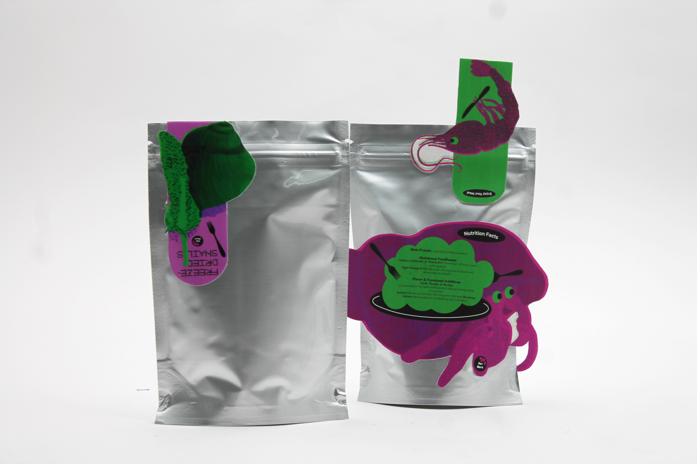
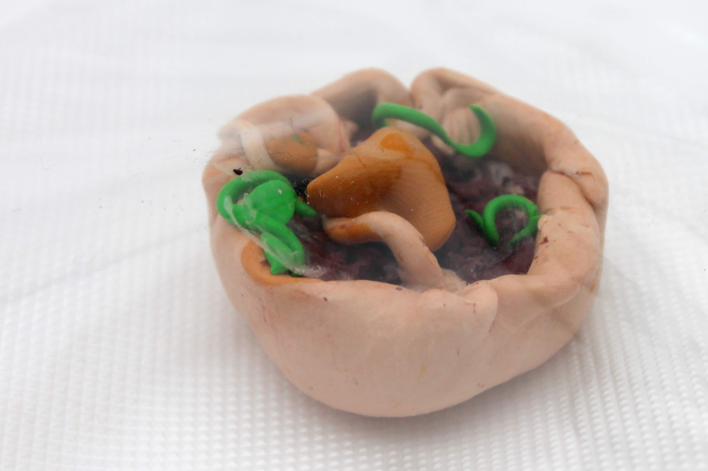
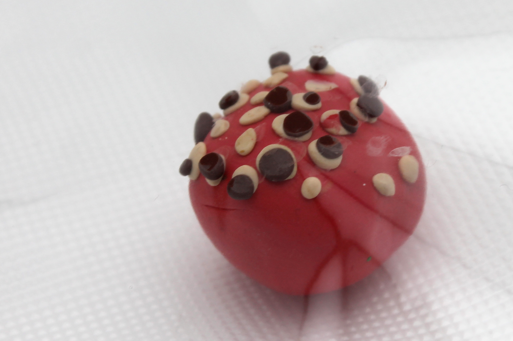

Mars Food Terminal
Colony Dome 3 • 2126 ©
Colony Dome 3 • 2126 ©
Enough for about 9 meals.
Our most recent supply ship arrived safely this morning, bringing much-needed resources to restock our food printers. As for the dry food cartridges, we're still resolving some issues with our aquarium farms, so please remain patient as we work to bring back the full variety of seafood.

Fresh squid from our aquafarms, dehydrated and printed into a chewy, savory snack. A colony classic!

A hearty base infused with the freshest vitamins and minerals from the surface of our local crater.

A sweet and creamy treat made with frozen minerals harvested from the most recent orbit of comet X-52/11.
If your food prints slightly crunchy the mineral cartridge probably ran low overnight. Please speak to a member of staff at the front desk to get it reprinted with a fresh cartridge.
Note: Free salt and pepper packets are available at the condiment station, but please use them sparingly to avoid depleting our limited supplies.
We prepare every cartridge with love and care to ensure you get the best dining experience.